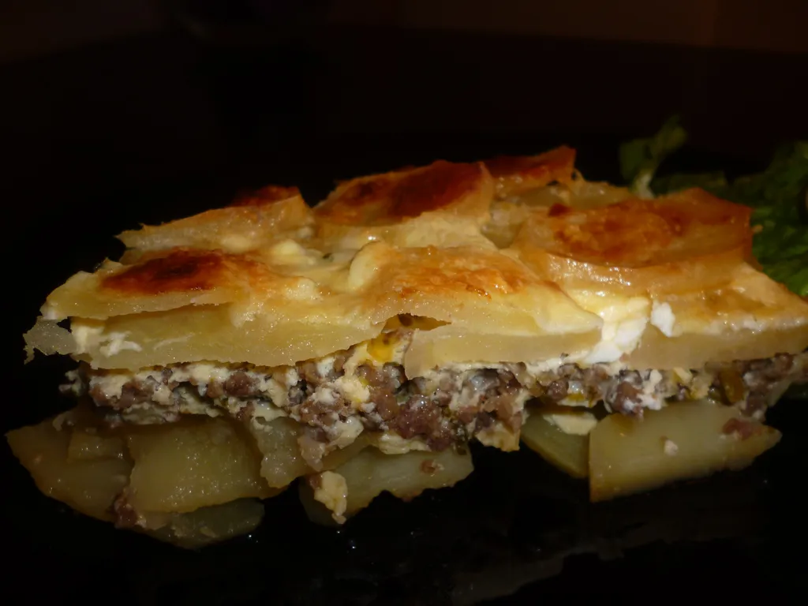

Potrebno je:
Krompir oguliti, narezati na kriške u jednu posudu. Dodati 2 kašike ulja i kašiku soli, te sve dobro izmešati.
U drugoj posudu pomešati mleveno meso sa kašikom bibera, kašikom soli i sitno seckanim lukom. Sve promešati, pa dodati 4 kašike ulja i 8 kašika vode. Opet dobro izmešati.
Zamutiti 4 jajeta, uliti čašu mleka i kašiku brašna, te sve dobro izmutiti.
Vatrostalnu posudu podmazati margarinom ili maslinovim uljem, te popločati dno i stranice posude kriškama krompira. Sada dolazi red mesa, pa red krompira, pa opet red mesa, pa red krompira. Preko ove “konstrukcije” preliti umućenu smesu sa jajima.
Musaku peći 40ak minuta na 225°C dok fino ne porumeni.